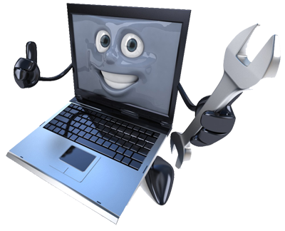

Блог
Для чого потрібно чистити ноутбук від пилу?
Чистка ноутбука необхідна для більшення терміну експлуатації апарату. Якщо портативний комп'ютер перегрівається і продовжує працювати, неприємності можуть бути досить відчутними, в тому числі і матеріально.
Рекомендується не допускати температуру нагрівання всередині апарату більше 80°C. Дізнатися температуру нагрівання, можна за допомогою спеціальних програм. Якщо вона піднімається до більш високих значень, то ймовірність виходу з ладу дорогих комплектуючих - таких як північний або південний мости, відеочіп і т. п. значно збільшується, також перегрів може привести до передчасного зносу куллера.
Заміна комплектуючих зажадає великих витрат, ніж чистка ноутбука від пилу всередині.
Як часто вам знадобиться чистка ноутбука усередині?

Періодичність чищення залежить від моделі ноутбука і умов експлуатації. В Деяких випадках рекомендується чистити раз на пів року, в деяких раз в 5 років.
Для того, щоб дізнатися коли потрібно всередині почистити ваш лептоп можна стежити за температурою. В середньому періодичність становить раз на 1,5 - 2 роки. Однак профілактика може вимагатися і частіше.
Відбувається це тоді, коли:
- ✅В будинку є коти, собаки та інша домашня живність. Термін зменшується на 3-6 місяців.
- ✅Ви звикли курити, працюючи з портативним комп'ютером. Час можна зменшити на 2 - 4 місяці.
- ✅Власник комп'ютера - дитина. Термін скорочується на 1-2 місяці.
- ✅Ви живете на першому поверсі, або ваші вікна виходять на жваву проїжджу частину. Чистка ноутбука усередині від пилу вам буде потрібно раніше на 3 - 6 місяців.
Чому відбувається перегрів?
Трапляється, що безвідмовно працює портативний комп'ютер через рік-другий коректної роботи раптом починає відчутно гальмувати при виконанні навіть найпростіших завдань, а іноді й мимоволі відключатися. Не виключено, що причиною збоїв в роботі апарату можуть бути віруси та інші шкідливі програми.
Проте якщо з допомогою перевстановлення програмного забезпечення позбутися проблем не вдалося, є всі підстави припускати що вам необхідна чистка ноутбука від пилу всередині. Ця процедура допоможе позбавитися від перегріву основних робочих вузлів, який відбувається внаслідок засмічення радіатора і інших частин досить складно влаштованої системи охолодження. Така система необхідна будь-якому мобільному комп'ютера: компактні розміри не дозволяють забезпечити елементам конструкції достатню вентиляцію і попередити їх нагрівання один від одного. Хоча енергозберігаючі технології і гарантують мінімальне енергоспоживання, активно навантажуються робочі пристрої, такі як центральний процесор і відеоадаптер, все одно відчутно нагріваються.
Щоб система охолодження функціонувала нормально, необхідно забезпечити доступ повітря до повітрозабірних отворів на корпусі, які зазвичай розташовані знизу. Тому що працює апарат не рекомендується ставити на коліна, на ліжко або на килим: у цьому випадку отвори перекриваються, а комп'ютер - перегрівається. Однак і тоді, коли лептоп стоїть на рівній поверхні столу, уникнути чищення усередині ноутбука від пилу через певний період часу вам все одно не вдасться: воздухозаборная система працює на зразок пилососа і разом з повітрям активно втягує всередину апарату пил. Цей пил, збираючись на пластинах радіатора, з часом перетворюється в щільний шар на зразок повсті, який перекриває доступ охолоджуючого повітря до системи.
Якщо зависання і збої в роботі відбуваються через забруднення, чистка від пилу дозволить відновити його працездатність і попередить вихід з ладу дорогих комплектуючих. Саме для того щоб цього не сталося, апарат мимовільно відключається при підвищенні температури вище допустимих меж. Після видалення забруднення, що працюють під навантаженням мікросхеми перестають перегріватися, і апарат повертається до експлуатації в звичайному режимі.
Наша спільнота

Львів.Діагностика/ремонт/
чистка ноутбуків